Bluetooth
-
Lavora sulle PAN(Personal Area Network)
- con bassissimo diametro (10 metri)
-
Cerca di sostituire i vari cavi come mouse tastiera cuffie ecc…
-
Con le ultime connessioni arriva fino a 3 Mbps Il TDM (Time Division Multiplexing) del Bluetooth è a 625 micro secondi
-
Client device e Master controller comunicano su due slot alternati
- tipo uno prende gli slot pari uno i dispari
- gli slot sono divisi per un intervallo di tempo di 625 microsecondi FDM con FHSS Il FDM consiste nell’usare diverse frequenze per trasmettere dati in parallelo. Bluetooth lo combina con FHSS (Frequency-Hopping Spread Spectrum) per aumentare robustezza e sicurezza. L’ordine dei salti di frequenza è:
-
Pseudocasuale (sembrano casuali ma sono deterministici).
-
Sincronizzato tra master e client.
- TDM → gestisce chi parla quando.
- FDM con FHSS → gestisce su quale frequenza si parla
-
M (Master Controller): dispositivo centrale che controlla la comunicazione.
-
C (Client Device): dispositivi attivi che comunicano con il master.
-
P (Parked Device): dispositivi registrati ma inattivi (non comunicano finché non vengono “risvegliati”). 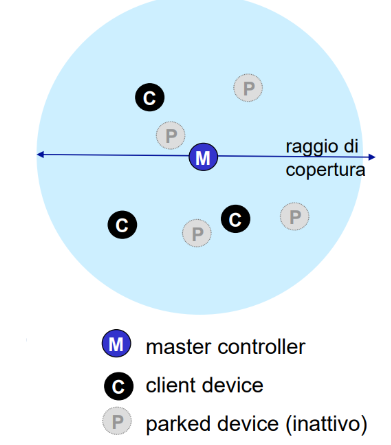
Il Bluetooth non presenta infrastruttura fissa ma ha architettura ad hoc
- i dispositivi si organizzano in modo dinamico ponendo master controller e client device
- Fino a 8 dispositivi attivi contemporaneamente (1 master + 7 client).
- Il master ha un ruolo fondamentale:
- Decide la sequenza dei salti di frequenza (FHSS).
- Controlla la potenza di trasmissione.
- Esegue il polling, cioè interroga i client per sapere se hanno dati da trasmettere (i client non parlano autonomamente).
una piccola rete Bluetooth si chiama PICONET
Bootstrapping processo che fa entrare in una piconet
si può entrare in 2 modi
- Neighbor discovery
- il master invia dei messaggi in broadcast chiamati inquiry su diversi canali
- I dispositivi in ascolto (su un canale) rispondono con un ritardo casuale → per evitare collisioni.
- Serve a scoprire chi è nelle vicinanze.
- Paging
- il master invita un dispositivo specifico a entrare
- Quando il dispositivo risponde con ACK, il master gli comunica:
- Il pattern dei salti di frequenza.
- L’orologio (clock).
- L’indirizzo di partecipazione.
- il master invita un dispositivo specifico a entrare
Covid e Bluetooth
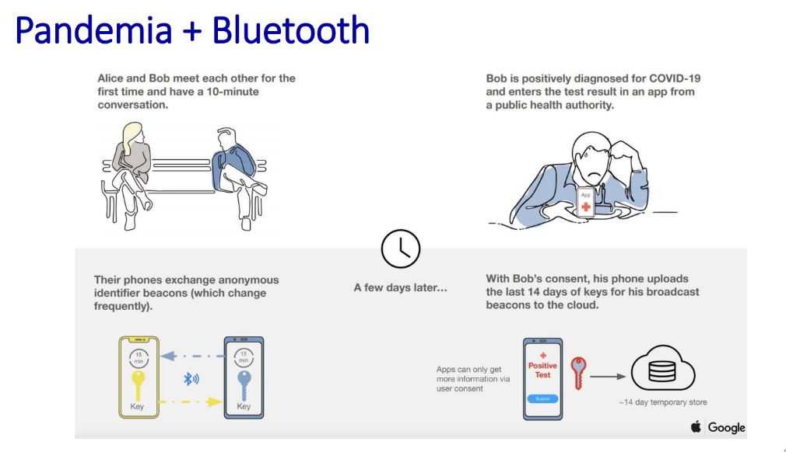 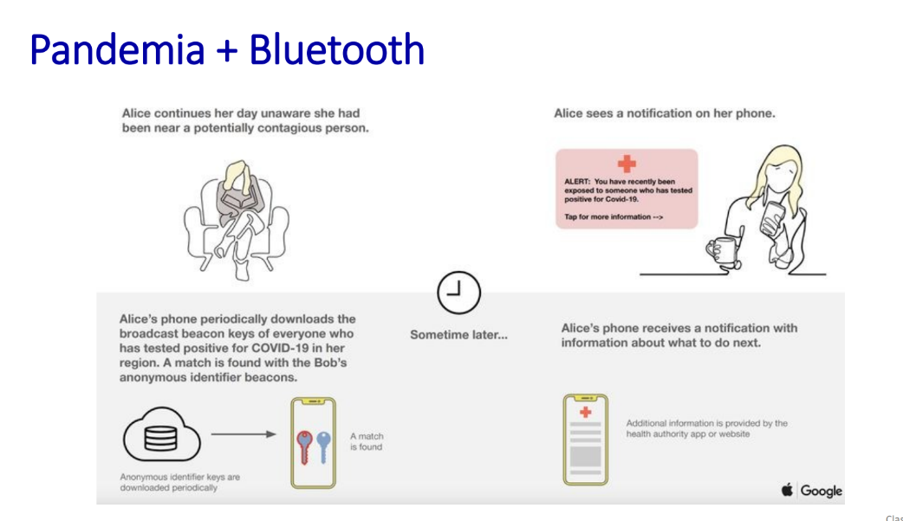
Reti Cellulari 4G/5G
Rappresentano una soluzione diffusa e funzionale per avere internet mobile in wide-area
Similarità con Internet Cablato
- Entrambe hanno una struttura a livelli formata da:
- una Periferia di accesso, dove si collegano tutti gli utenti
- un Nucleo che è la parte di accesso centrale più potente
- gestisce e smista il traffico tra le reti
- Periferia e Nucleo sono differenti ma fanno parte dello stesso carrier, ovvero operatore telefonico Tim ecc…
- Globalizzazione delle reti, proprio come internet le reti mobili sono reti di reti, anche se sei connesso a una rete TIM di Roma puoi comunicare con un utente Vodafone di Milano
- Le reti mobili usano gli stessi protocolli di comunicazione delle reti cablate
- HTTP, DNS, TCP, UDP, IP, NAT
- Anche qui troviamo tecnologie moderne come:
- SDN (Software Defined Networking)
- Ethernet
- Tunneling (per trasmettere informazioni in modo protetto o virtuale)
- La rete mobile è connessa alla rete cablata, attraverso punti di interconnessione
Differenze con Internet Cablato
- la rete cablata ha collegamenti fissi e usa protocolli come quello Ethernet
- invece nelle reti mobili abbiamo protocolli specifici per funzionare via wireless
- LTE PHY per il livello fisico
- MAC per il controllo di accesso al mezzo
- RLC per il controllo al collegamento radio
- invece nelle reti mobili abbiamo protocolli specifici per funzionare via wireless
- il passaggio da una cella all’altra è gestito autonomamente nelle reti mobili
- questo fenomeno si chiama handoff
- nelle reti cablate no
- Sulle reti cablate, chiunque può collegarsi (spesso senza autenticazione).
- Nelle reti mobili, invece, ogni utente ha una SIM card:
- Esistenza del concetto Home network
- sostanzialmente quando sei connesso alla rete a cui sei abbonato sei connesso alla home network
- quando cambi paese ed entri in roaming invece sei in una rete ospite, visited network
Architettura 4G semplificata e i suoi elementi
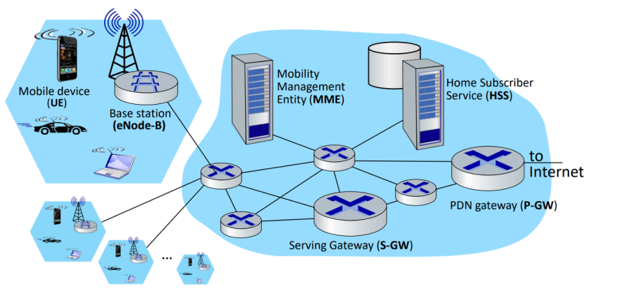 Ora spiegheremo per bene tutte queste cose qua sopra che cosa rappresentano
Esagono in alto a sx Mobile device e Base station
- il Mobile device e il dispositivo dell’utente dotato di abbonamento e SIM
- la SIM funziona con un identificativo IMSI a 64 bit
- nelle reti LTE si chiama UE, User Equipment
- Esso comunica con la rete tramite la base station
- la base station si trova alla periferia della rete dell’operatore
- è simile a un Access Point ma più avanzato perché deve
- coordinare le varie autenticazioni dei device
- gestire le risorse radio per far si che ogni UE stia nella sua cella
- supporta handover con i vari passaggi di cella per la movilità
- collabora quindi con altre Base station per ottimizzare l’uso della radio
- è simile a un Access Point ma più avanzato perché deve
Nuvola a dx HSS, Gateway e MME
- Home Subscriber Server ha il compito di memorizzare le informazioni degli utenti come IMSI, profili utente, chiavi di autenticazione
- È il “registro centrale” dell’operatore (es. TIM, Vodafone…)
- La rete dell’HSS è considerata la home network per quei determinati dispositivi
- quando invece sei in roaming loro non hanno i tuoi dati devono chiederli
- Lavora con l’MME per autenticare i dispositivi mobili
- MME(Mobility Management Entity)
- Coordina l’autenticazione dei device con l’HSS
- Gestisce in particolare la parte della mobilità tra gli utenti
- eseguendo handover tra celle
- sa la posizione dei vari dispositivi
- si occupa di sistemare adeguatamente i tunnel tra UE e P-GW
- Gateway S-GW e P-GW
- sono delle componenti all’interno della rete che hanno il compito di instradare correttamente i dati nelle reti mobili
- S-GW(Serving Gateway), inoltra i dati tra UE e P-GW
- P-GW(PDN Gateway), fa da gateway verso internet
- appare come un normale router ed è connesso alla rete globale
- fornisce servizi NAT
- se sei dietro un IP condiviso fa da intermediario tra UE e internet
- usa il tunneling per garantire una comunicazione trasparente
- che sia anche sicura mente ti muovi
- sono delle componenti all’interno della rete che hanno il compito di instradare correttamente i dati nelle reti mobili
Separazione tra piano dati e di controllo della rete LTE
una rete LTE presenta una divisione tra piano dati e piano di controllo
🔒 Piano di Controllo
📌 Scopo:
Gestire mobilità, sicurezza e autenticazione.
📦 Non trasporta dati reali, ma solo informazioni di gestione.
È come dire: “Chi sei? Dove vuoi andare? Ti autorizzo? Hai il biglietto?”.
🔧 Componenti principali:
- Base station (eNode-B): comunica con il telefono (UE).
- MME (Mobility Management Entity): gestisce autenticazioni, mobilità e sessioni.
- HSS (Home Subscriber Server): contiene chi sei (es. IMSI, profili, chiavi).
- S-GW / P-GW: anche loro partecipano alla fase iniziale per preparare la connessione.
🧠 Importante:
I protocolli qui non spostano dati, ma fanno le regole, come GTP-C (Control), S1-AP, NAS…
🌐 Piano Dati
📌 Scopo:
Trasportare il traffico IP vero e proprio, cioè quello che stai facendo su Internet (YouTube, WhatsApp, siti, ecc.).
📦 Viaggio diretto dei dati:
Telefono (UE) → eNode-B → S-GW → P-GW → Internet
🚇 I dati passano in un “tunnel” IP chiamato GTP-U (User) che serve a
- Separare i dati reali dal resto della gestione rete
- Proteggere e indirizzare correttamente il traffico ✅ Vantaggi
- Più velocità
- Più efficienza
- Il piano di controllo può cambiare (ad es. spostarti su un’altra antenna) senza disturbare il traffico in corso 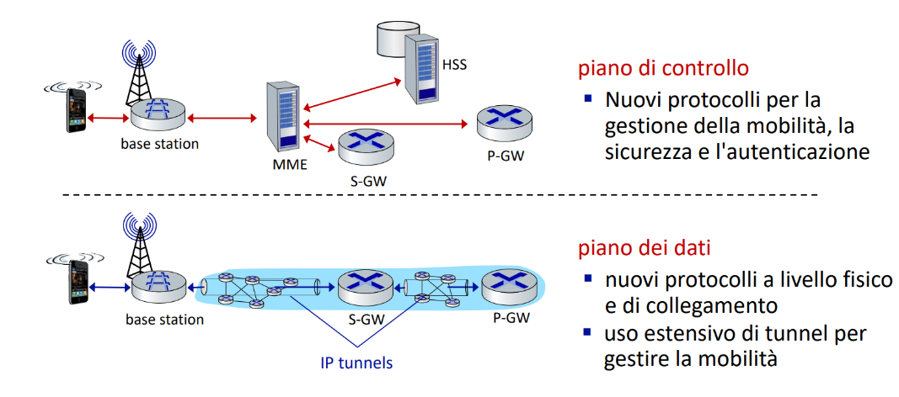
Pila protocollare del piano dei dati LTE
ogni comunicazione segue una struttura a strati (chiamata pila protocollare) vediamo come è formato il livello di collegamento di questa pila nel first hop e nel tunneling core
1. First hop
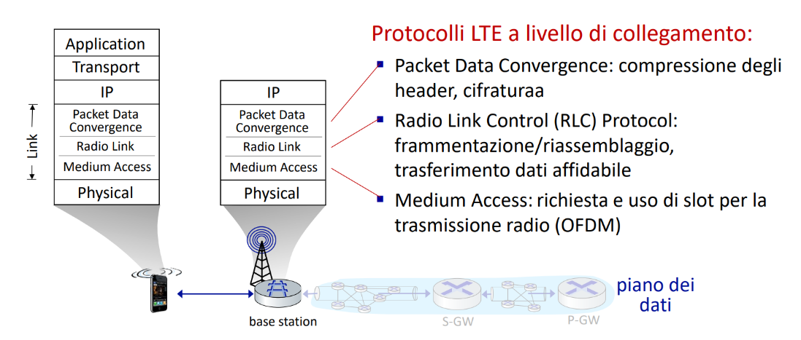 è suddiviso in 3 sottolivelli
- PDCP- Packet Data Convergence Protocol
- ha il compito di prendere ogni header dei pacchetti e di ridurle per occupare meno spazio attraverso compressioni
- criptazione dei dati per maggiore sicurezza
- RLC- Radio Link Control
- questo livello ha il compito di suddividere i dati in pezzi più piccoli per trasmetterli e poi vengono rimessi insieme una volta ricevuti
- presente anche una correzione degli errori garantendo che ogni pezzo arrivi a destinazione
- MAC- Medium Access Control
- gestisce gli accessi al vanale radio per gestire chi deve parlare e quando
- assegna slot di tempo
- OFDM è la tecnologia usata per suddividere la banda in più canali paralleli riducendo interferenze Questo primo hop LTE è quindi molto strutturato e complesso, con protocolli dedicati alla sicurezza, affidabilità e gestione della radio.
- gestisce gli accessi al vanale radio per gestire chi deve parlare e quando
2. Tunneling nel core LTE
- dalla base station ai vari gateway al vero e proprio internet e abbiamo dei cambiamenti
- Per trasferire tutti questi dati adeguatamente si effettua il tunneling
- i dati dell’utente vengono impacchettati e spediti attraverso una sorta di tubo
- si usa un protocollo chiamato GTP-U (GRPS Tunneling Protocol- User Plane) che ha il compito di impacchettare i dati e inserirli dentro un pacchetto UDP che verrà spedito nel tubo
- i dati dell’utente vengono impacchettati e spediti attraverso una sorta di tubo
🔄 Come funziona, passo dopo passo
- Il datagramma GTP-U viene creato nella base station.
- Viene inoltrato al S-GW, che non lo guarda dentro, ma semplicemente lo passa avanti.
- Il S-GW lo incapsula dentro un nuovo tunnel e lo spedisce al P-GW.
- Alla fine, il P-GW lo spacchetta e lo invia a Internet. 🔁 Tutto questo avviene in maniera trasparente per l’utente: è come se fosse sempre connesso, anche se si muove o cambia celle.
Presenta diversi vantaggi di mobilità, sicurezza e soprattutto è complementare a internet senza stravolgerlo al suo interno
piano dati: Associazione con una Base Station
L’associazione di un dispositivo UE a una base station avviene in 4 fasi
Fase 1 – La base station si fa riconoscere
- ogni 5 millisecondi la BS invia un segnale in broadcast di sincronizzazione primario
- i dispositivi mobili sentono quel segnale
- tutti i BS trasmettono su frequenze differenti
Fase 2 – Il telefono ascolta e analizza
- dopo aver sentito il segnale primario ora avviene quello secondario con più dettagli
- per ogni BS rilevata il nostro UE avrà:
- 📶 Configurazione del canale: larghezza di banda, tipo di frequenza, ecc.
- 🆔 ID della cella: identifica univocamente la BS.
- 🏷️ ID operatore: capisce se la BS appartiene al suo operatore.
- ⚙️ Parametri extra: ad esempio priorità, risorse disponibili.
- per ogni BS rilevata il nostro UE avrà:
Fase 3 – Il telefono sceglie la base station
- il telefono sceglie quale BS usare in base a quella che ha un segnale più forte e preferendo le varie home network senza andare in roaming
Fase 4 – Cosa succede dopo la scelta?
- avviene la connessione vera e propria
- ✅ Autenticazione: il telefono si identifica con la SIM card → HSS e MME verificano chi sei.
- 🧠 Creazione del collegamento: viene riservato un canale per te.
- 🌍 Configurazione del piano dati:
- Ti viene assegnato un indirizzo IP.
- Vengono stabilite le regole per far passare i tuoi pacchetti dati.
La rete LTE prevede nodi dormienti per ridurre il loro consumo energetico che si dividono in
- light sleep
- si attiva dopo alcune centinaia di millisecondi di inattività ma si risveglia periodicamente per controllare se ci sono dati in arrivo
- deep sleep
- si attiva dopo 5-10 secondi di inattività
- la connessione e sospesa e non riceve più dati periodicamente, ma se si sveglia può ancora riceverli
- se si sposta serve una nuova associazione con la BS
- overhead aggiuntivo
Rete cellulare globale una rete di reti IP
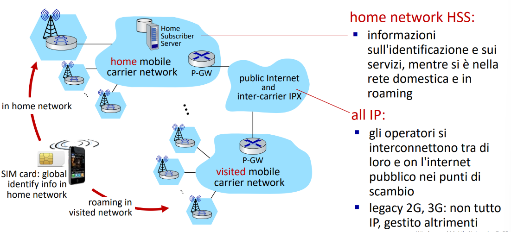
5G
si è passati al 5G per tre scenari
- eMBB (Enhanced Mobile Broadband): connessioni più veloci e ad alta capacità.
- mMTC (Massive Machine-Type Communications): supporto a milioni di dispositivi IoT.
- URLLC (Ultra-Reliable Low Latency Communications): comunicazioni ultra-affidabili a bassa latenza.
il 5G ha un incremento delle velocità rispetto al 4G di 10x e capacità di traffico del 100x
- frequenza maggiore
- potrebbero esserci problemi su distanze più lunghe dalle antenne rispetto al 4G
Precisazioni sul concetto di mobilità
Definizione
La mobilità è la capacità di un dispositivo di muoversi tra le reti mantenendo attive le comunicazioni in corso, senza perdere la connessione.
Spettro della mobilità
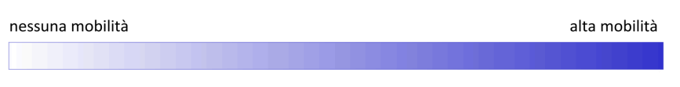
| Livello di mobilità | Descrizione |
|---|---|
| Nessuna mobilità | Il dispositivo si muove tra reti di accesso ma è spento durante lo spostamento. Nessuna necessità di mantenere la connessione. |
| Bassa mobilità (inattiva) | Il dispositivo è acceso, si muove ma non mantiene connessioni attive (es. accendi il telefono in una nuova area). |
| Mobilità intra-rete | Il dispositivo si muove all’interno della stessa rete wireless dello stesso operatore. Cambia cella, ma rimane nella stessa rete di fornitore. |
| Mobilità inter-rete (interessante per l’esame) | Il dispositivo si muove tra reti di accesso ma resta nella stessa rete del fornitore, mantenendo attive le connessioni. (Es. da una cella a un’altra, durante una videochiamata) |
| Mobilità globale (interessante per l’esame) | Il dispositivo si muove tra reti di fornitori differenti, mantenendo le connessioni attive. (Richiede roaming e coordinamento più complesso tra operatori.) |
Il problema della mobilità è che se un dispositivo si sposta da una rete all’altra come fa la rete vecchia a sapere che deve inoltrare i pacchetti alla rete nuova? 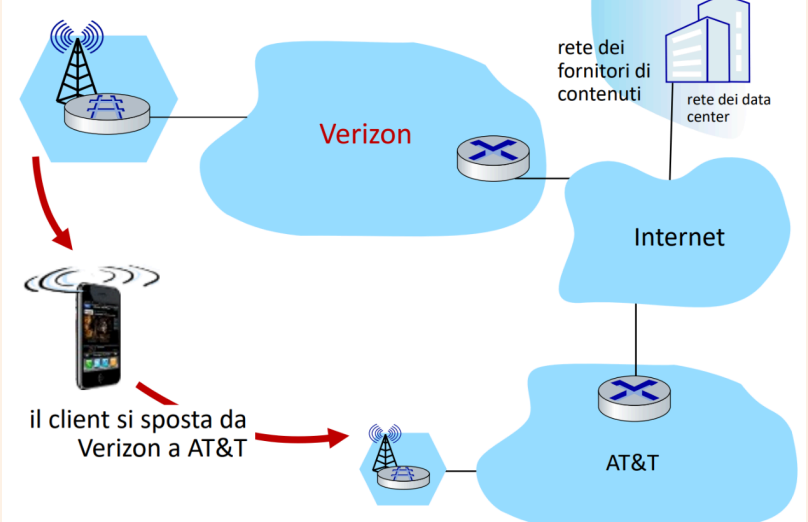
Due approcci differenti al problema
1. Lasciare che i router gestiscano la cosa
In questo approccio:
- Ogni volta che un dispositivo si sposta in una nuova rete, il router della nuova rete annuncia al mondo “Ehi, ora questo dispositivo è con me!”
- La rete interna aggiorna le sue tabelle di routing, ovvero le “mappe” per capire dove mandare i dati. Ma la cosa che rende questo approccio pessimo è che funziona se i dispositivi sono pochi
- se ci sono miliardi di utenti non possono aggiornarsi queste tabelle in continuazione
- sarebbe un disastro
2. Far gestire la mobilità al dispositivo stesso o a chi gli sta vicino(Home Agent)
si divide in 2 tecniche principali
- a instradamento indiretto (indirect Routing)
- il dispositivo ha un suo home agent nella rete di origine
- quando si sposta i pacchetti vengono prima spediti all’home agent
- poi l’home agent li reinvia al dispositivo nella nuova posizione
- l’home agent non conosce direttamente quali sono le base station che invieranno il tutto al dispositivo, il tutto avviene in modo indiretto
- Svantaggio: i dati fanno un giro più lungo, non ottimale.
- instradamento diretto (Direct Routing)
- il mittente scopre dove si trova il dispositivo(il suo nuovo indirizzo IP)
- gli invia i pacchetti in modo diretto senza passare dall’home agent
- in poche parole i servizi che ti forniscono informazioni ti mandano i dati sul nuovo indirizzo IP che scambi ad ogni spostamento
- veloce ed efficiente
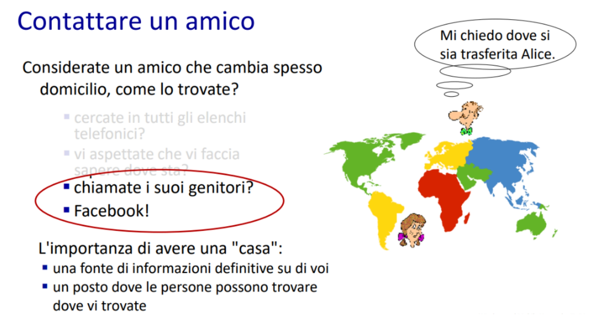
Rete domestica, Rete visitata
4G/5G
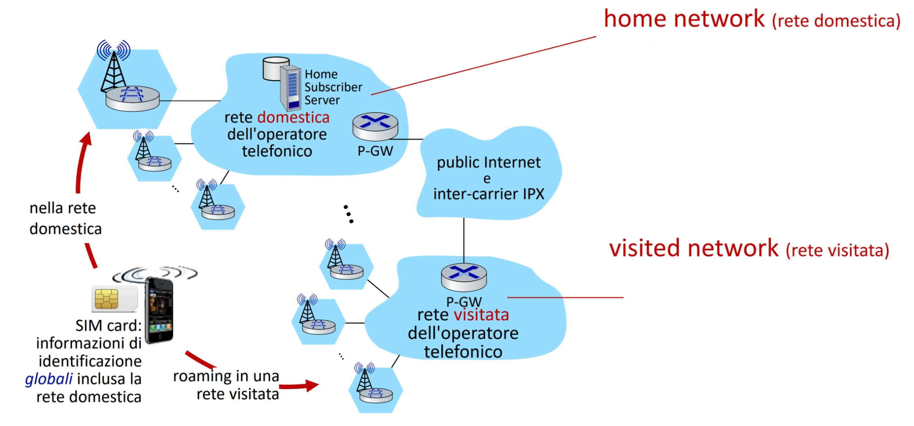 In sostanza ci sono due tipi di network
- home network
- rete gestita dal tuo operatore con cui hai un contratto
- visited network
- rete gestita da altri operatori con cui ti connetti in roaming
- funziona tramite accordi
ISP/WI-FI
 Nel concetto ISP/WI-FI non c’è un discorso di home network, ogni rete è indipendente e l’utente deve accedere ad esse attraverso le credenziali salvate sul loro device
Nel concetto ISP/WI-FI non c’è un discorso di home network, ogni rete è indipendente e l’utente deve accedere ad esse attraverso le credenziali salvate sul loro device
- solo alcune reti hanno concetti di roaming come eduroam con un discorso simile
Rete domestica/Rete visitata
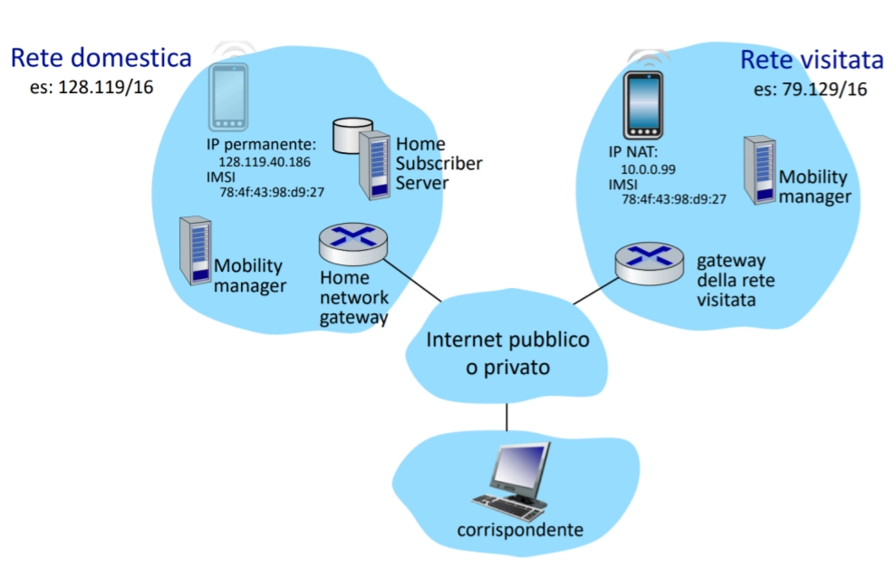
- il dispositivo mobile ha due identità
- IMSI identificatore globale
- IP può essere permanente nella rete domestica e NAT nella rete visitata
- La rete domestica assegna l’IP permanente e ha l’HSS, mobility manager ecc…
- La rete visitata assegna un IP locale ma fa tunneling verso la rete domestica
- instradamento e autenticazione vengono fatti sulla rete domestica anche se sei altrove
Registrazione: come far capire “a casa” dove sei
Quando ti sposti in una rete diversa da quella del tuo operatore
- la rete domestica deve sapere dove inoltrare i tuoi dati, questo processo si chiama registrazione
🔁 Passaggi della registrazione 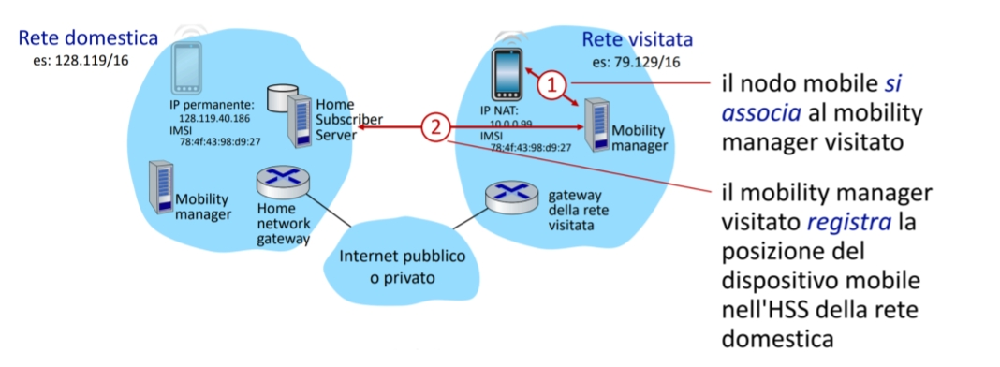
-
Il nodo mobile si associa al mobility manager della rete visitata
- Appena entra nella rete visitata, il dispositivo invia una richiesta al Mobility Manager (MM) locale.
- Questo MM è responsabile di sapere che il dispositivo si trova lì in quel momento.
-
Il mobility manager visitato registra la posizione del nodo presso l’HSS della rete domestica
- Invia un messaggio all’HSS (Home Subscriber Server), che si trova nella rete del tuo operatore.
- L’HSS aggiorna la posizione del nodo mobile, registrando in quale rete (e in quale MM) si trova attualmente.
-
Risultato finale
- Il Mobility Manager visitato sa che il dispositivo è collegato a lui.
- L’HSS domestico sa che il tuo terminale è associato a quel mobility manager visitato. Così, quando un corrispondente ti invia un pacchetto (es. chiamata, messaggio, dati), il tuo operatore sa in quale rete inoltrarlo grazie all’aggiornamento ricevuto.
Routing indiretto
Quando un dispositivo entra in una rete visitata non cambia il suo IP logico(domestico)
- come fa allora a ricevere pacchetti nella nuova rete?
- la soluzione è il routing indiretto
🔄 Fasi del routing indiretto 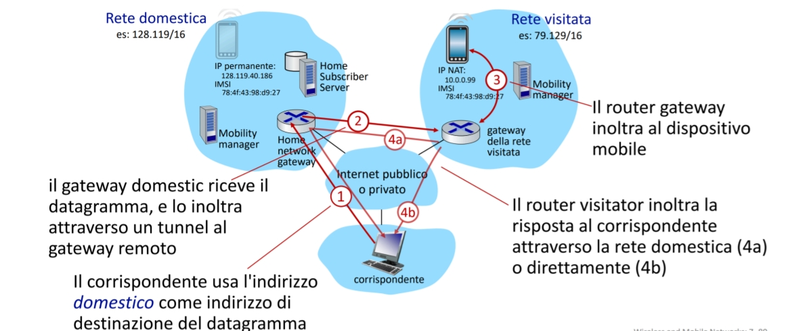
- Comunicazione in ingresso
- Il corrispondente (es. un server o un altro utente) invia un datagramma al dispositivo mobile usando l’IP della rete domestica (es.
128.119.40.186). - Il pacchetto arriva al gateway della rete domestica (Home Network Gateway).
- Il corrispondente (es. un server o un altro utente) invia un datagramma al dispositivo mobile usando l’IP della rete domestica (es.
- Tunneling
- Il gateway non può inoltrare direttamente il pacchetto al dispositivo, perché si trova altrove.
- Quindi lo incapsula (tunnel IP) e lo invia attraverso Internet al gateway della rete visitata (es.
79.129.16.x).
- Consegna
- Il gateway visitato inoltra il datagramma al dispositivo mobile tramite il suo indirizzo NAT locale (es.
10.0.0.99).
- Il gateway visitato inoltra il datagramma al dispositivo mobile tramite il suo indirizzo NAT locale (es.
🔁 Comunicazione in uscita Il dispositivo mobile, una volta ricevuto il pacchetto, può rispondere in due modi:
- 4a. Routing indiretto simmetrico:
- Invia la risposta al gateway domestico, che poi la consegna al corrispondente.
- 4b. Routing diretto:
- Invia direttamente la risposta al corrispondente (possibile, ma rompe la simmetria IP).
Routing indiretto pregi e difetti
Concetto di instradamento triangolare
- il corrispondente invia i dati all’IP domestico del dispositivo
- la rete domestica inoltra il tutto alla rete visitata tramite tunneling Se il corrispondente e il dispositivo sono vicini(tipo stesso paese), questo instradamento è altamente inefficiente 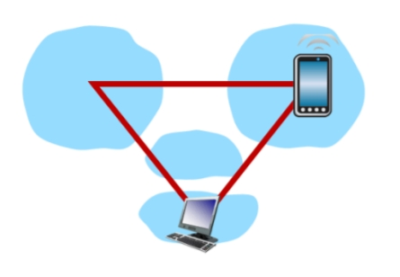 Anche se l’IP del dispositivo cambia il corrispondente non se ne accorge e non vengono fermati inoltri dei dati
Routing diretto
Nel routing diretto il corrispondente invia i pacchetti direttamente alla rete visitata dove si trova attualmente il dispositivo mobile, senza passare per reti domestiche 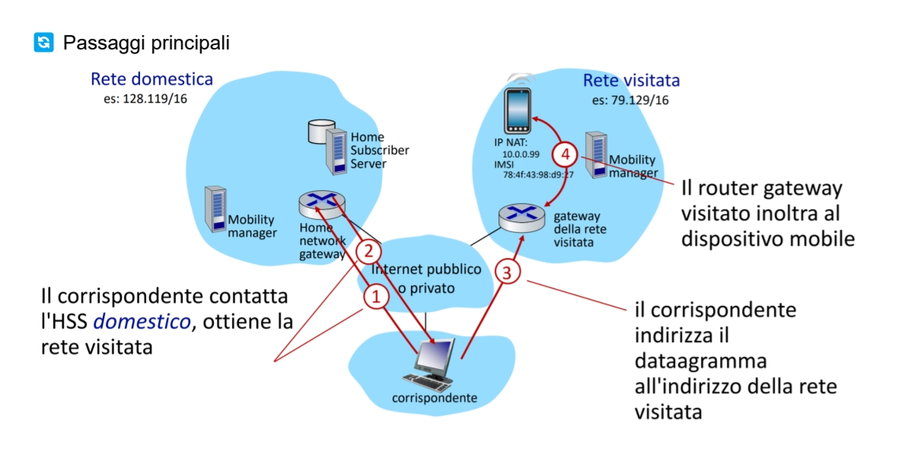
🔄 Passaggi principali
- (1) Il corrispondente vuole inviare un pacchetto al dispositivo mobile.
- (2) Contatta l’HSS della rete domestica per sapere dove si trova il dispositivo.
- (3) Riceve l’indirizzo della rete visitata (es. NAT o IP temporaneo).
- (4) Invia i dati direttamente alla rete visitata, che li inoltra al dispositivo.
questo rende il tutto estremamente più veloce e con latenza minore ma il corrispondente deve ogni volta ottenere il nuovo care-of-address, quindi il nuovo IP nella rete visitata
se il nodo mobile cambia ancora rete il sistema riesce a gestirlo ma ad ogni cambio bisogna aggiornare e registrare di nuovo tutto aggiungendo maggiore complessità